Fell free to hit me up, either for a chat about design, an opportunity or even a travel recommendation.
Court
Documents
Monitor
Giving attorneys the means of organizing their court documents as well as getting notified about updates
Advocatus is a company that helps law firms and attorneys from Romania by offering them digital solutions to manage their work. Their platform contains an advanced CRM (Customer Relationship Management) application, a tool for legal files monitoring, as well as a company insolvency monitoring app.
In Romania, court documents as well as dates and details about hearings or appeals are posted on a public online portal. Attorneys could use the public portal to monitor legal files, but Advocatus wanted to make this task easier.
So we created “Monitor Dosare” app which offers a more user friendly solution to monitoring court documents as well as additional functionalities to help attorneys organize them.
My responsability was giving a visual form to the product owner’s vision with whom I collaborated closely. His expertise on the needs, goals and the work process of attorneys guided me throughout the project.
Using an iterative design process based on constant feedback I managed to create a simple and friendly interface that supports the mental model of attorneys and empowers them to organize their legal files in a smart way.
Client
Year
Scope
Made at
Advocatus
2020
Wireframe, UI Design
Redouble Agency
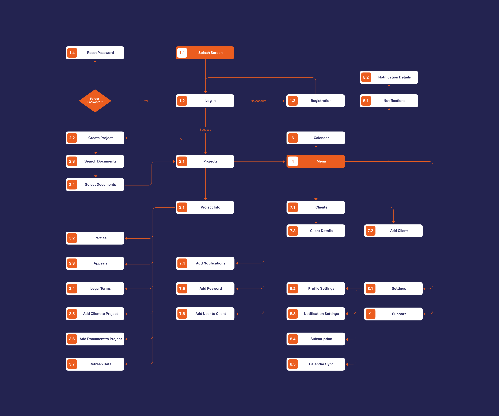
Some bumps in the road will always occur throughout a project but keeping them at a minimum rate is a goal that matters a lot to me. What always helped was creating a user flow which is the most basic visualization of what is needed to be built. By creating it, me and my colleagues managed to get on the same page early on.
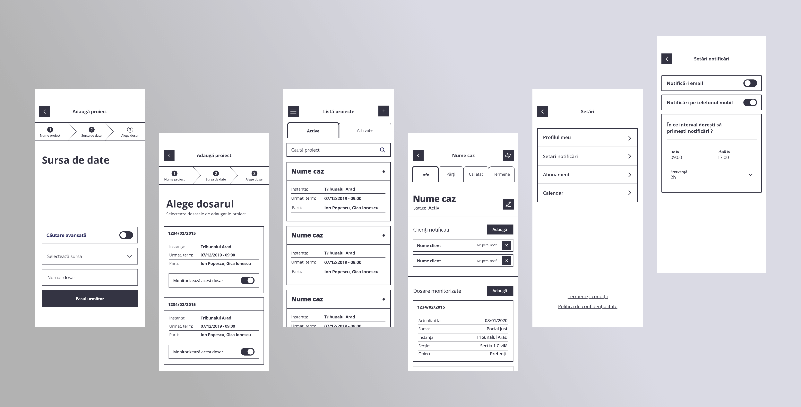
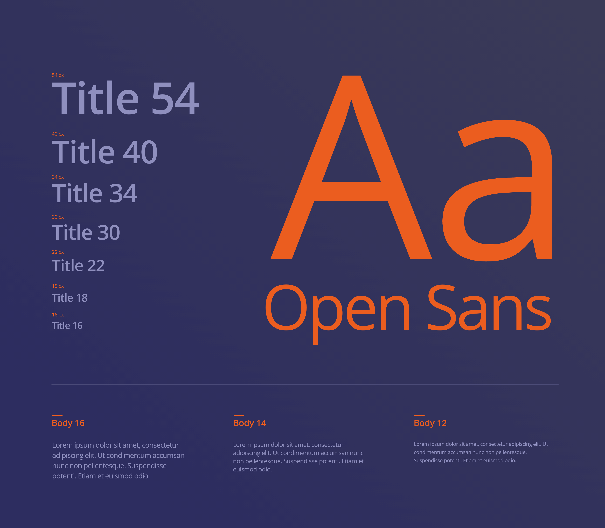
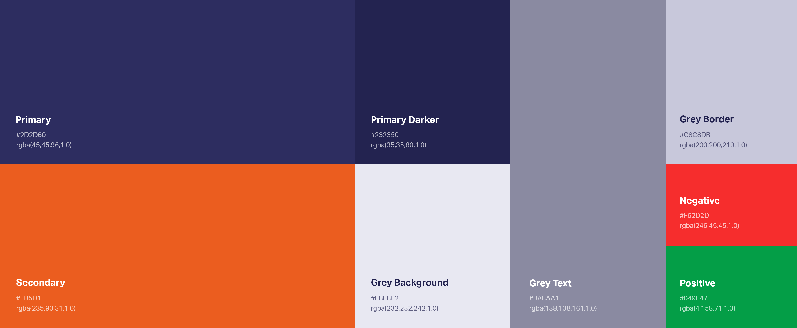
Building an initial set of typography styles, brand colors, shadows, spacing values and interface elements is an essential first step of the visual design phase. This ensures a visualy balanced and consistent result. Having these predefined visual design tools keeps me focused on the desired style and gives me space to think about other issues. The style guide could get altered during the process but the final result eliminates the confusion during the developer handoff.
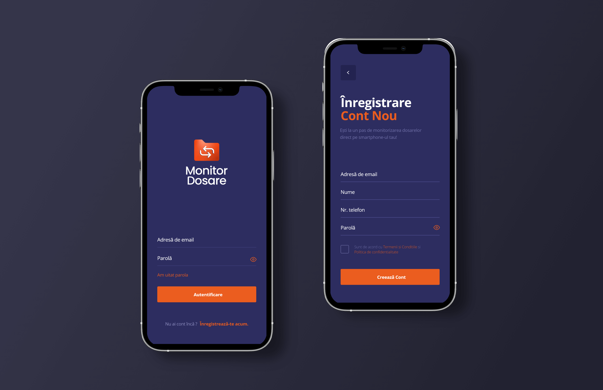
The main way that the app helps attorneys to organize their court documents is by saving them into projects dedicated to each court case.
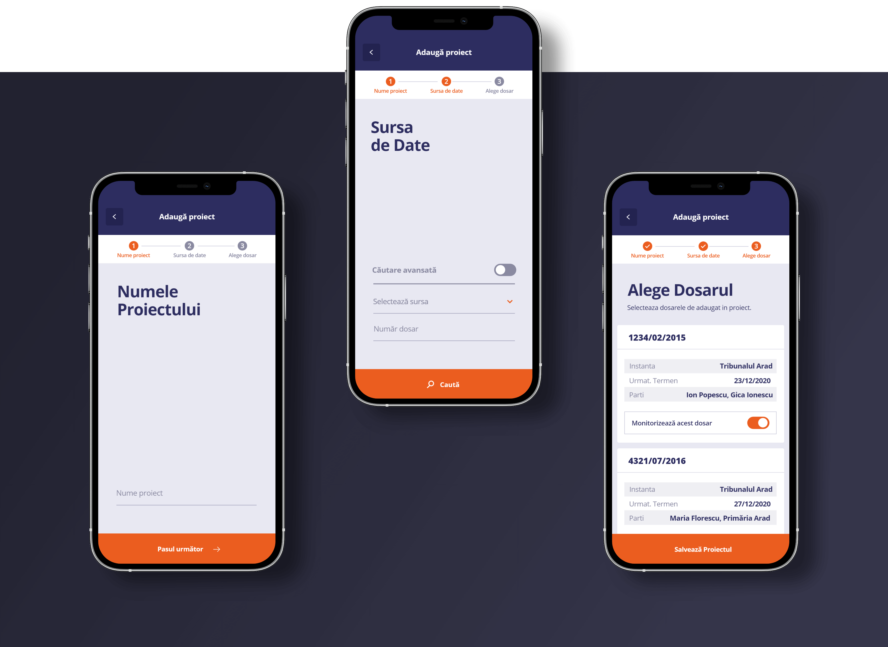
To create a project they must complete a form divided into steps. Firstly they give a name to the project, then they input details about the desired documents and at the end they save the relevant documents from a list of results. The goal of reducing user’s cognitive load and effort was achieved by grouping related elements in the most efficent way, placing the process details at the top and the form at the bottom.
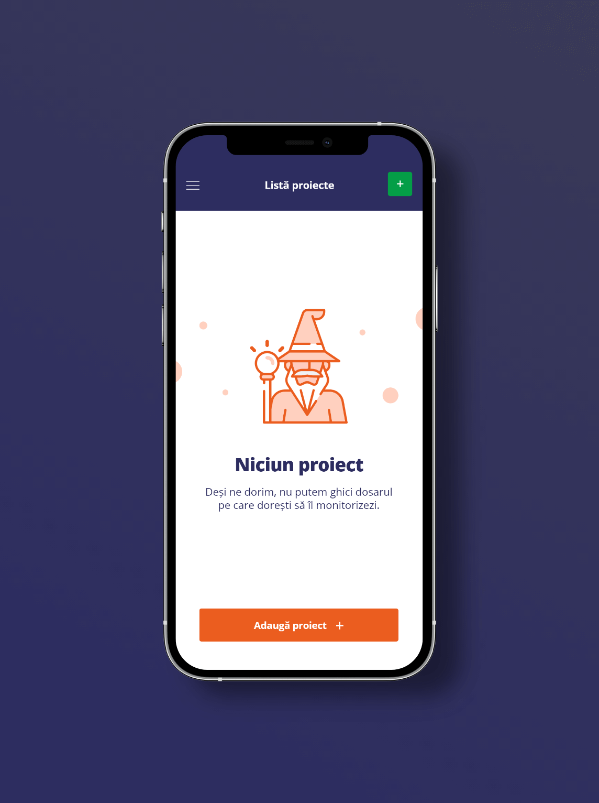
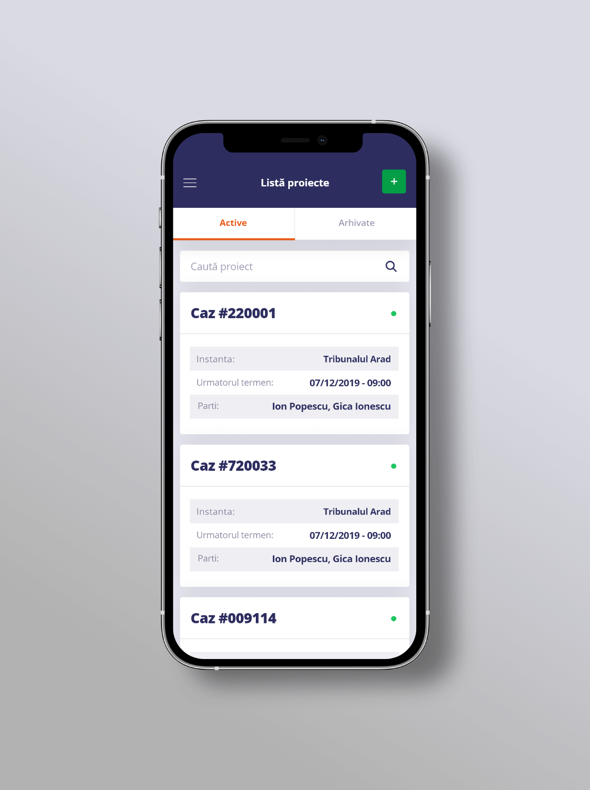
The list of projects was designed with ease of browsing in mind. The project card contains the most relevant details that help identifying them. Clarity and ease of scanning were achieved through hierarchy and highlighting what matters the most.
Browsing the details of a project is done through a tab navigator. This solution promotes an efortless navigation with minimal taps needed from the user.
The tabs reflect the main structure of a court document which is cromprised of: the parties involved in the trial, the appeals and the court decisions. The project is managed on a dedicated tab called “Info”. Here the user has the options to rename or archive the project and to add more legal files and notified clients.
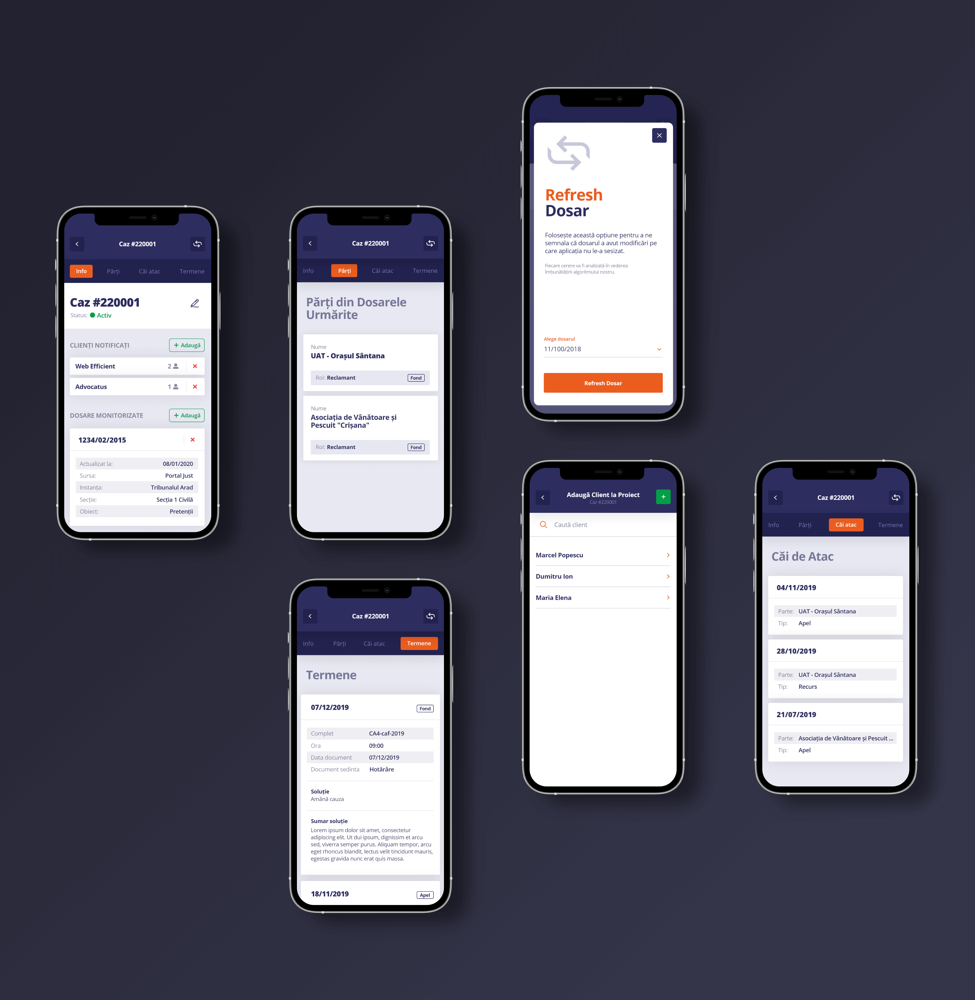
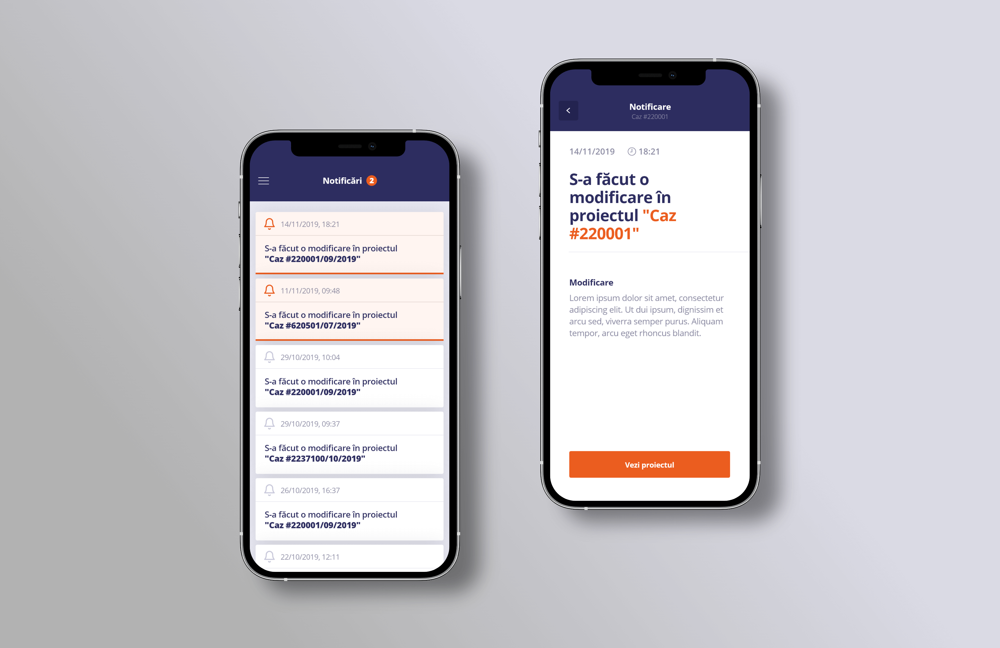
Besides organizing the court documents in an intuitive way, the app also helps attorneys to keep up to date with all the court updates. For each update the user recieves a notification that is stored on a dedicated screen. I was careful to create a great contrast ratio between the unread and read notifications. Each notification has a dedicated screen.
Options that allow users to customize their experience are indispensable in an application. The main categories of settings are structured in a simple menu to avoid overwhelming the user.
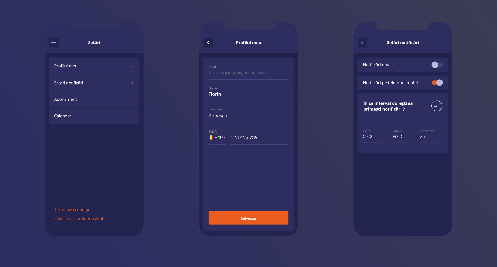
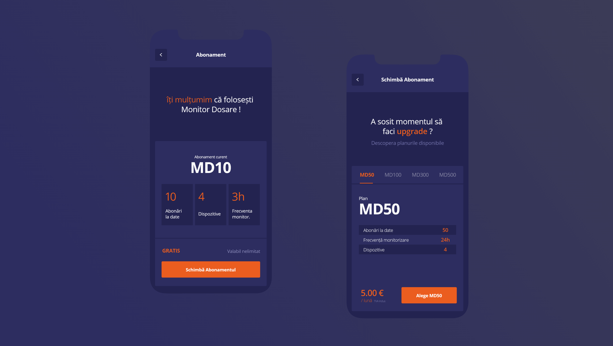
Creating the app was possible because of the monetization plan that also helps maintaining and improving it. Because of this it was important for us to create a frictionless experience when upgrading or downgrading the premium plan. Clear details and no hidden information were the goals that we wanted to achieve.
After we approved the final design my task was to extend it for the desktop screens.
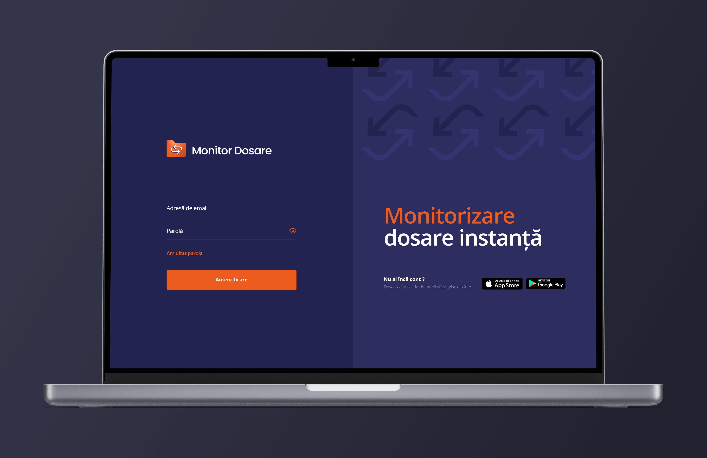
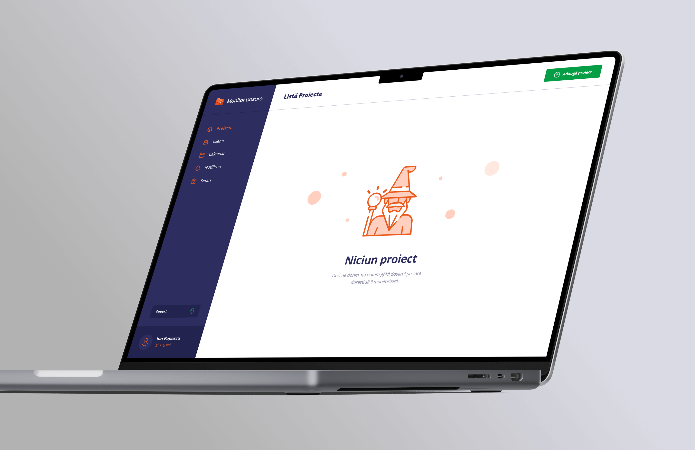
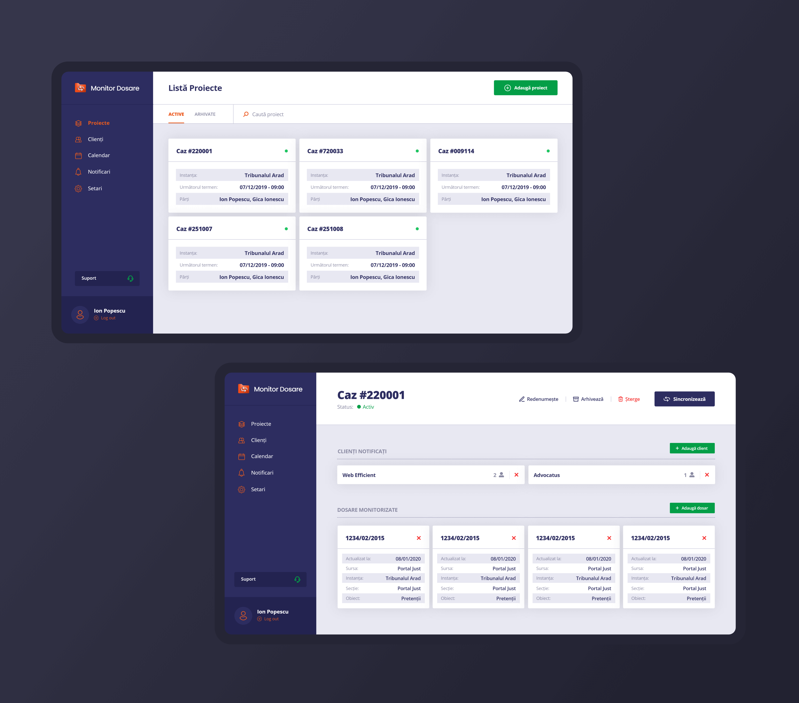
Get in touch /
Get in touch /
Get in touch /
The best way to get in touch is through my email adress. Check the contact page for a complete list of contact methods.
View
My Contact
Details
Get in touch /
Get in touch /
Get in touch /
Fell free to hit me up, either for a chat about design, an opportunity or even a travel recommendation.
The best way to get in touch is through my email adress. Check the contact page for a complete list of contact methods.
View
My Contact
Details